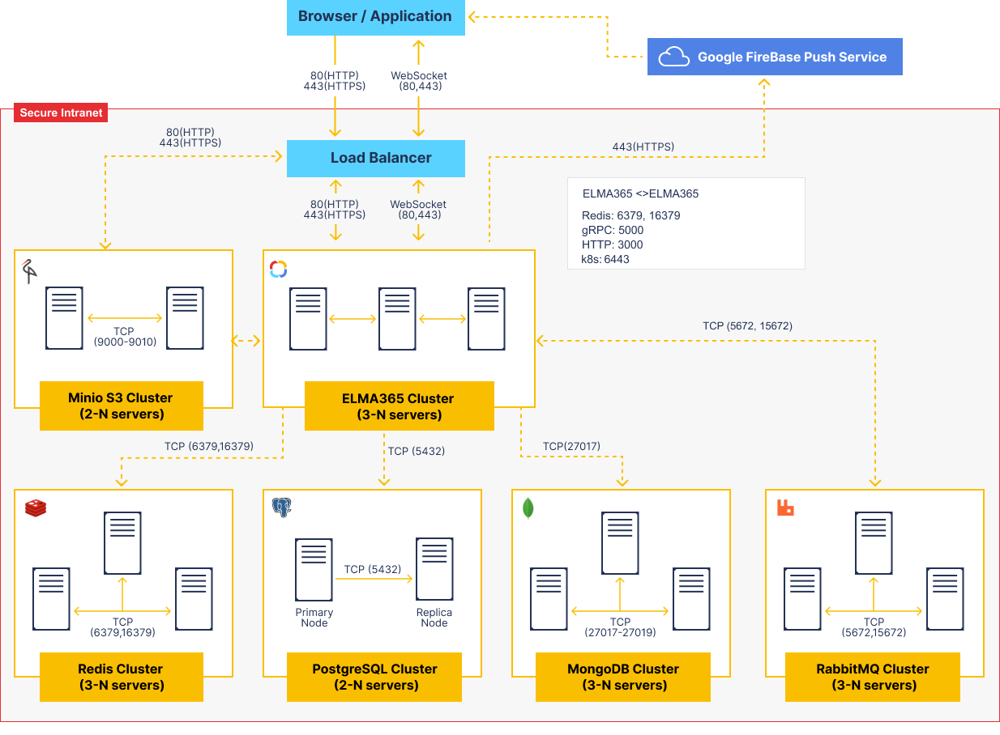

The diagram in this article displays the protocols and ports used for communication between the servers in BRIX. The information provided on the diagram can also be used for deploying and scaling BRIX fault-tolerant clusters.
Data storage services (PostgreSQL, MongoDB, RabbitMQ, Redis, MinIO S3) have specific rules of deployment and scaling. You can read more in the System Requirements for BRIX Enterprise edition article.
BRIX consists of multiple microservices isolated in containers all managed by Kubernetes container orchestrator.

BRIX cluster internal services
aspose-actions |
Text and office document templating using DSL. It is also used for file comparison, watermarking, and document conversion |
auth |
Authorization and groups, users, and org chart management |
babysitter |
A service for managing user microservices. It allows you to add portable services to modules that launch third-party microservices in the cluster when the module is activated |
balancer |
Multi-tenancy management |
calculator |
Calculating different values in-app items |
chat |
Private and group messages |
collector |
App items read and filter |
contractor |
Service for the work of the Contract component. |
convertik |
Converting documents to .pdf |
crm |
Service for managing CRM features |
deploy |
Migration management |
diskjockey |
Files and directories |
docflow |
Document workflow. Approval and review. |
dup-detector |
A service for configuring duplicate search and processing results. |
event-bus** |
System events monitoring and processing via events bus |
exchange |
A service for managing system components, including creating, exporting, importing, and updating their versions |
feeder |
Activity stream / channels |
fileprotection |
A service that allows authorized users to access a file via a link, taking into account the user's permissions for that file |
front |
BRIX Front end |
integrations |
External integrations |
lowcodecd |
A service for configuring and automating the transfer of configuration components between companies |
mailer |
Email management |
main |
API gateway |
messengers* |
Live chats and external messengers management |
notifier* |
Notifications and web-sockets |
otelier |
A service for collecting system performance metrics in the OpenTelemetry format |
picasso |
EDS fingerprint management |
postman |
A service for storing and processing emails in the Email workspace |
processor |
Process management |
projects |
Service for managing projects and project tasks |
registrator |
The service is responsible for configuring the case nomenclature and registering application elements |
reminder |
In the TS SDK, there are reminders for tasks and events. The service stores and processes reminder objects and triggers notifications for the authors of the reminders |
reporter |
Service for the Report component |
scheduler* |
Schedules, tasks delayed start, time reports |
settings |
User profile and system profile management |
support-messenger |
Provides the operation of the technical support live chat |
telemetrist |
The service is for storing and aggregating internal telemetry data and generating reports based on that data |
template-mapper |
The service is responsible for mapping fields in templates to the app context |
templater |
Text and office documents templater |
todolist |
The service provides TO-DO tools that allow users to place blocks with descriptions of actions or widgets that need to be configured in the future within the business process designer or interface designer. |
vahter |
Users management in a multi-tenancy system |
web-forms |
Web-forms for external systems management |
widget |
Low-code widget management. Storage and life-cycle |
worker |
Validating, transpiling, and user scripting in processes, widgets, modules |
worker-gateway |
A gateway that allows script execution services to access the Web API of other BRIX services. |
* The services cannot be executed in multiple instances.
** The event-bus service can be executed in:
- A single instance.
- Multiple instances.
Fault tolerance and scaling of individual services
The microservice architecture of BRIX Enterprise allows for flexible system scaling based on load profile.
The provided HELM package enables automatic scaling for microservices that can operate in a multithreaded environment. The minimum and maximum number of replicas are specified in the values-elma365.yaml file, both globally for all services and individually for each one. For example, you can set more replicas for processor, main, and worker than for other services.
BRIX Standard does not support autoscaling, and microservices are launched in a single instance.
When multiple servers are connected in a cluster, the Kubernetes orchestrator tries to distribute service instances evenly across the servers. If one server fails, the orchestrator identifies the failed services and recreates them on the remaining servers.
To operate a fault-tolerant BRIX cluster, at least three servers are required. These servers constantly interact and monitor each other's health. A server may be considered disconnected if it is unavailable on the network for a certain period. The system will continue to function as long as at least two servers remain connected.
Adding more servers to the cluster does not solve the problem of scaling for higher loads. This only reduces the likelihood of complete service failure. To scale, you need to make changes to the cluster configuration. You can identify the system's load bottleneck and scale the specific service.
For example, the worker service, which handles script execution. It is resource-intensive but performs well in multiple parallel instances. If your configuration’s load profile heavily utilizes server scripts, you can set a higher replication factor (more than two) for this service. The orchestrator will then create additional instances of this service for faster parallel script execution.
You can manage parallel instances for execution in other services in the same way. To determine which services need to be scaled, it's necessary to analyze the load profile of a specific configuration at different times.
Found a typo? Select it and press Ctrl+Enter to send us feedback